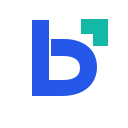
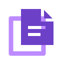

01 / MonogrammaUna b costruita come un componente; il punto aperto suggerisce modifica e movimento.16 / 32 / 64 px#2557E8#13B8A6SVG logoSVG simboloPDF stampaPNG grande
02 / WireframeLa superficie di lavoro, con un modulo evidenziato e una maniglia di selezione.16 / 32 / 64 px#173D4D#F47847SVG logoSVG simboloPDF stampaPNG grande
03 / PagineDue tavole sovrapposte e una piega: un segno editoriale essenziale, leggibile anche piccolo.16 / 32 / 64 px#6D40C8#BD8BFFSVG logoSVG simboloPDF stampaPNG grande
04 / NodiBlocchi e connessioni: dal wireframe al flusso, con una composizione dinamica.16 / 32 / 64 px#086E69#D5A62CSVG logoSVG simboloPDF stampaPNG grande